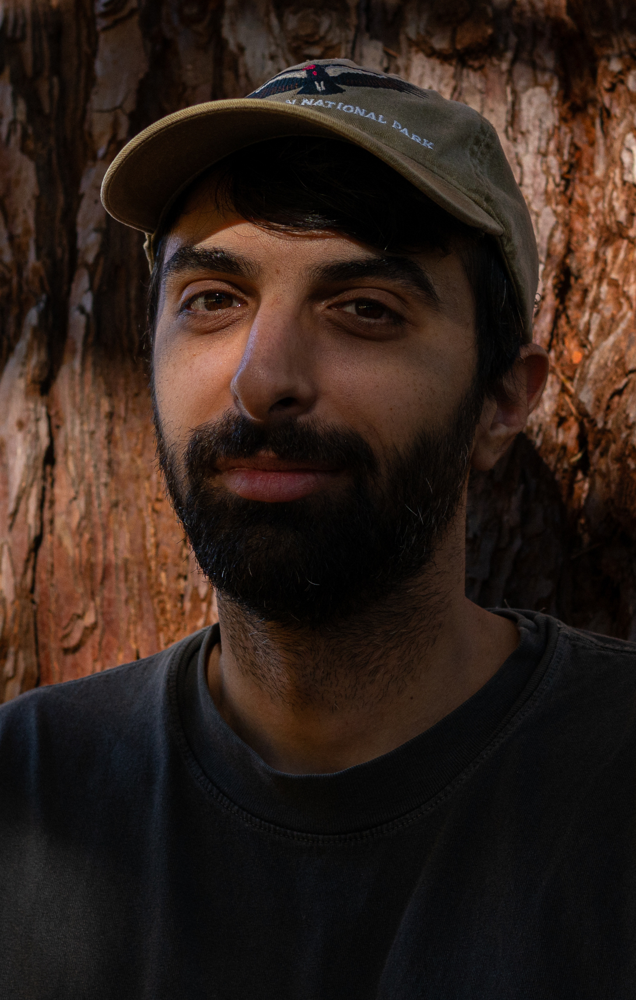

Hi, I'm Saris. I'm an editor, filmmaker, and occasional motion graphics artist based in Los Angeles. My work spans narrative short films, commercials, documentaries and social media. You can see examples of my work under the "Work" tab above, with included details for each project. The Narrative page is a good place to start if you want to see my editing.
As an editor, I work primarily in DaVinci Resolve and Adobe Premiere, and for motion graphics I mainly use Adobe After Effects. I am also an experienced videographer-- for samples of that, check out the Events page, all of which was shot by me.
To get an idea of my motion graphics work, check out "Can We Really Restore The LA River?" in the Documentary page. That's also a good place to see my filmmaking, as I handled almost every role on that film including directing, writing, producing, and shooting.